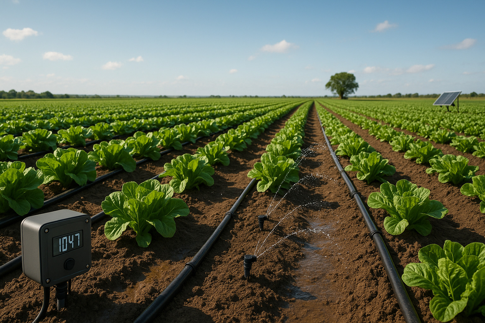
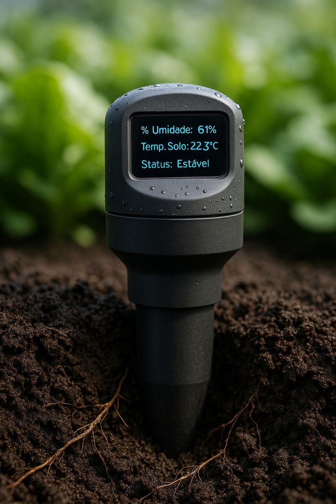
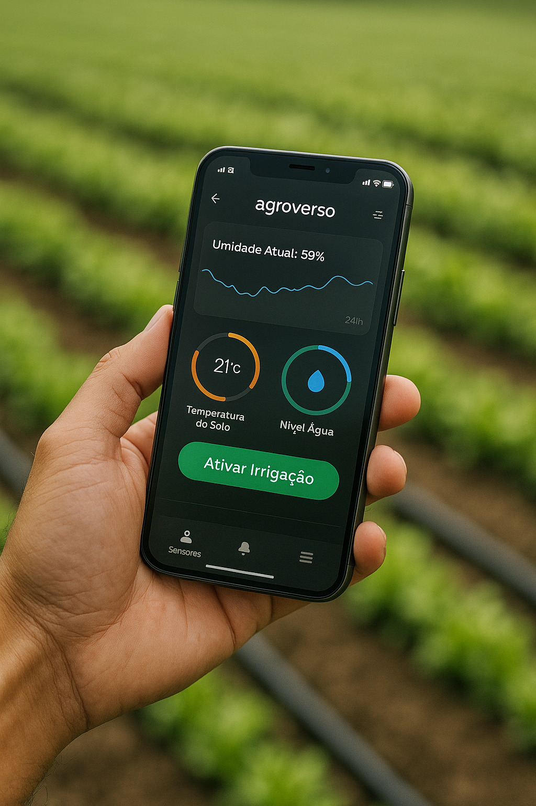

Irrigacao Inteligente
Eficiência hídrica com sensores, controle remoto e economia regenerativa
Galeria do Sistema



Sobre o sistema
O Sistema de Irrigação Inteligente Agroverso integra sensores de umidade e temperatura do solo com controle remoto via aplicativo. Seu funcionamento é dinâmico, preditivo e baseado em dados climáticos, garantindo irrigação apenas quando necessário.
Benefícios principais
- 💧 Economia de até 70% de água com acionamento preciso
- 🌡️ Leitura contínua de umidade e temperatura do solo em tempo real
- 📲 Controle remoto completo via app Agroverso, com notificações inteligentes
- 🧠 Integração com previsão do tempo e irrigação automática preditiva
- 🌱 Preserva a microbiota do solo e evita compactações desnecessárias
Aplicações recomendadas
Ideal para hortas, pomares, jardins, estufas, viveiros e sistemas agroflorestais. Aplicável em pequenas propriedades, projetos urbanos, escolas, agroecologia comunitária e agricultura familiar.
Solicite seu orçamento agora mesmo
Atendimento especializado para sua propriedade, comunidade ou iniciativa regenerativa.
📲 Solicitar orçamento via WhatsApp